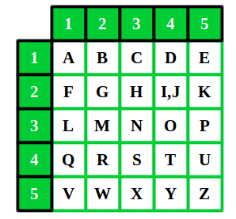
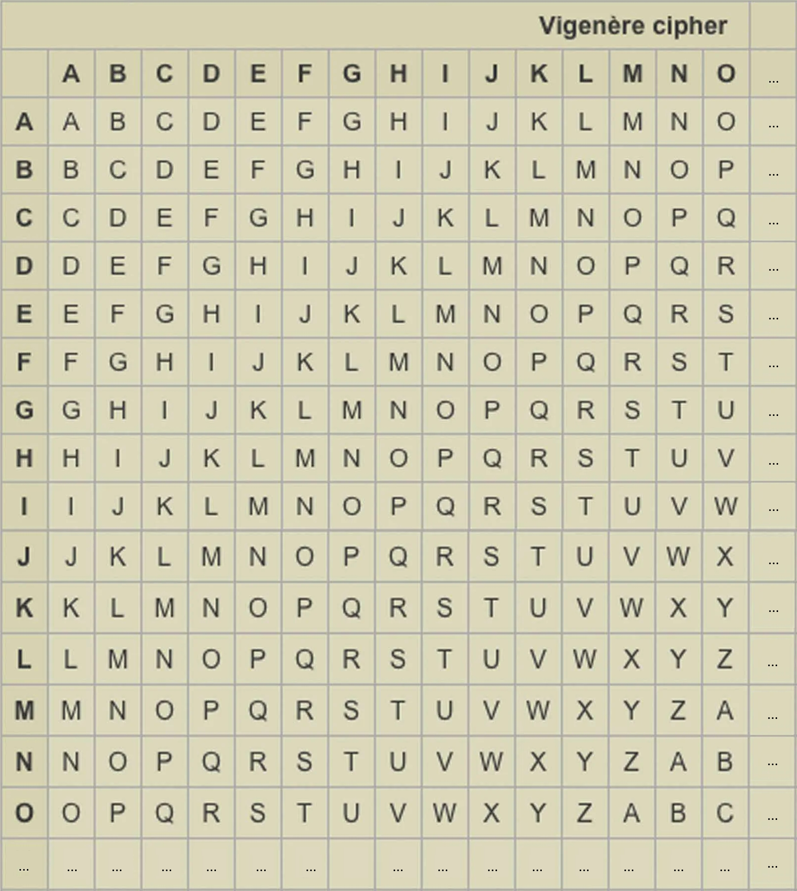
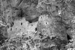

Шифр Цезаря - моноалфавитный шифр подстановки, в котором каждая буква из открытого текста заменяется на такую букву, которая в алфавите находится на некотором постоянном числе позиций левее или правее от рассматриваемой буквы.
Пример:
Открытый текст: SOMETEXT
Ключ: 5
Зашифрованный текст: XTRJYJCY
Квадрат Полибия - моноалфавитный шифр подстановки, в котором составляется таблица шифрования с определенным количеством пронумерованных строк и столбцов, параметры которой зависят от мощности (количества букв в алфавите) и для шифрования используются координаты буквы в таблице.

Пример:
Таблица:
| 1 | 2 | 3 | 4 | 5 | |
| 1 | A | B | C | D | E |
| 2 | F | G | H | I/J | K |
| 3 | L | M | N | O | P |
| 4 | Q | R | S | T | U |
| 5 | V | W | X | Y | Z |
Открытый текст: SOMETEXT
Зашифрованный текст: 34-25-23-51-44-51-35-44
Квадрат Полибия - полиалфавитный шифр подстановки, в котором каждая буква сдвигается подобно шифру Цезаря с различным значением сдвига, зависящим от порядкового номера соответствующей буквы ключевого слова.
Для удобства шифрования и дешифрования может использоваться tabula recta:

Пример:
Открытый текст: SOMETEXT
Ключ: KEY
Ключ для шифровки: KEYKEYKE
Зашифрованный текст: CSKOXCHX
Шифр Дзивгис - шифр, комбинирующий шифр Виженера с работой с изображением. При шифровке используются первые 256 символов кодировки Unicode. Постоянный ключ представлен изображением в оттенках серого, где значение сдвига - цвет пикселя изображения ключа. Полученные числовые значения закодированных символов преобразуются в пиксели, которые случайным образом распределяются по изображению постоянного ключа, что в результате даёт шифр текст в виде изображения, и координаты этих пикселей в 16-ричной системе счисления формируют уникальный ключ (ключ дешифровки).
Пример:
Открытый текст: SOMETEXT
Постоянный ключ (ключ-изображение):

Зашифрованный текст:
Уникальный ключ (ключ дешифровки): 0007002f00260036001100560063005f0053003f0007004e0009000600450022
Помимо криптографической составляющей шифр имеет также и стеганографическую, т. к. при использовании в качестве ключа изображения высокого разрешения для шифровки относительно небольшого открытого текста измененные пиксили будут малозаметны на изображении - результате шифровки.
P. S. - Историческая справка
Шифр назван в честь Дзивгисской горной крепости в Осетии, которая, по преданию, в XVI веке преградила путь завоевателю, персидскому шаху Аббасу I.